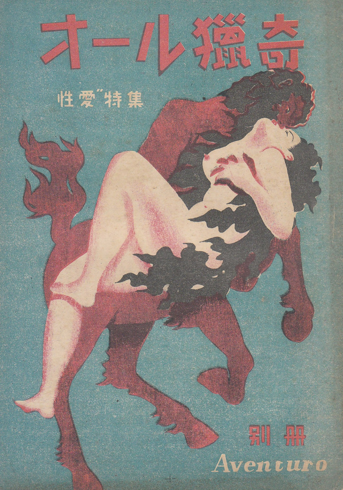

Kiss and Censor
2012
UToronto

Visual representations of kisses troubled censors around the world with the rise of film media in the twentieth century; a kiss was never just a kiss and the censors knew it. This talk presents the history of the kiss in modern Japan as a visible manifestation of the deepest effects of censorship. Even as censors attempt delete the trace of their work, producers continually reveal the marks of censorship.
Kiss and Censor: Redactionary Aesthetics in Transwar Japan
Kiss and Censor
3/2/12
Structuralism, Marxism, post-structuralism and the like are no longer the sexy topics they were. What is sexy instead is sex. On the wilder shores of academia, an interest in French philosophy has given way to a fascination with French kissing.
-Terry Eagleton, After Theory
Rodin’s “Kiss,” despite its realism, provides no libidinous thought.
-André Bazin, “Marginal Notes on Eroticism in Cinema”
I shall never forget my first experience in seeing kissing between man and woman. … I cannot express my feelings, but I could not help recalling what my mother said to me just before I started for America: “I have heard, my daughter, that it is the custom of foreign people to lick each other as dogs do.”
- Sugimoto Inagaki Etsu, A Daughter of the Samurai (1926)
At an exhibition of French modern art in Tokyo on May 31, 1924, Auguste Rodin’s Le Baiser (The Kiss) was confined to a “special room” and displayed behind a bamboo screen by order of the Tokyo Metropolitan Police Headquarters. This reception of Rodin’s The Kiss in Japan is but one moment in the global offense taken, with the sculpture at the center of obscenity battles nearly everywhere it went: in Brussels 1887, in Paris 1898, in Chicago 1893, in Lewes, England 1913, in Canada, 1919. As a moment in the world history of the kiss more generally, Rodin in Japan serves to highlight several functions of the kiss in modern Japan and around the world: the kiss connects individuals to others and to the world; the kiss is neither exclusively public nor private; the kiss often signifies through displacement and under erasure.
The administration of Rodin’s The Kiss in Tokyo is a useful symbol of the pregnant politics of curtailing of public performances of sexual behavior in the center of that metropolis in contrast to the overly sexualized liminal spaces in the peripheries of the city (such as 1920s Asakusa where sex, stage, and screen shared as central a role as similarly fringe cultures did in 1840s Monmartre, 1930s Alexanderplatz, and 1940s Times Square) and of the empire (at the far reaches of which “comfort women” would be expected to perform a public service far exceeding kisses). If kisses were part of a private world on the fringe of culture, they were also at the same time one of the many sites where the public discourse of the modern nation state (imperial or democratic) sought to influence its subjects. In the mid-1920s, Home Ministry censors began to crack down on cultural material featuring kissing, but kissing could be read everywhere in the years that followed. The imperial state’s restrictions of access to and occasional suppression of images of the kiss allow us to see in stark relief not only the failure of a complete and absolute censorship, but also how obscenity and sedition (the two main categories for censorship in modern Japan) were two sides of the same coin. As the kiss smacked of Zola-ist socialism in Paris, rubbed up against the tightly sealed prudish morals of Victorian England, and pecked at the bourgeois social fabric in Canada, the public kiss was glossed in Japan during the 1920s and 1930s as both the anarchic Western eroticism of ruthless capitalism and the cunning infiltration of Soviet-ism that could put the ruling classes in jeopardy. The censorship of kiss culture attempted to cultivate and maintain power for the imperial state; the assumption of this same power of the kiss was repurposed by the new regime of a “new Japan” under the Occupation.
Of course, kisses mean different things as they travel across time and space; yet the kiss remains a convenient ontological flashpoint for comparisons of various acculturations within a wider framework of a “singular modernity.” And although, in terms of function and form, the sexual kiss in modern Japan very much resembles the kiss elsewhere and at other times, it has been oddly taken out of the context of its relation to the kiss elsewhere at other times, held up as yet another in a long line of signifiers of Japanese uniqueness, and made part of an exotic story about a country of quirky sex practices. While it is true the history of the kiss in modern Japan until the 1950s may seem oddly out of sync with the story of global kiss (what was happening in Europe in the 1880s seems to have happened in Japan in the 1920s), to overplay this seeming difference is neither helpful for explanations of the kiss there, nor useful in the context of prevalent views of Japanese uniqueness. To continue to consider representations of kisses in Japan as belated or outside of some global/Western norm belies similar truths in the history of kisses elsewhere and within the purportedly homogeneous West. In fact, what kisses may teach us is that there are brief moments when paying attention to connections and continuities matter.
One need not have read Derrida’s reflections on kissing in On Touching—Jean Luc Nancy or to know that the two characters for the Japanese word seppun接吻mean “touching or connecting” and “lips” to recognize that the essence of the kiss is touch or connection; or, as the Aoyagi Yūbi Seppun tetsugaku (Philosophy of Kissing 1921) would put it, “the beauty of touch is the main point of kissing.” If kisses are fundamentally about touching and connecting, this article explores the aesthetics of the kiss from imperial Japan through the occupation in order to reconnect prewar and postwar regimes by explaining the role of the kiss as the place where private and public kiss up against one another. The kiss in Japan has been both a subversive sign of individual freedom outside of the imperial state (pre-1945) and a symbol of democracy and social freedom under the occupied state (1945-1952). Its fetishized position as both meaningful in itself and as a substitute for unspeakable meaning (as representation of even more intimate interpersonal relations with wide social-political implication) remained surprisingly continuous from at least the early 1920s through the early 1950s.
The lasting effects of the censor’s failed desire to eradicate discourse of sexual kissing during the 1920s and 1930s are readable both in the boom of cultural material produced around kissing at that time and its echo directly following the surrender in 1945-1949. This transwar continuity is significant because it shows us how, despite regime change or any shift between censoring kisses and promoting them, the kiss itself was deemed worthy of attention. If we neglect kissing in culture and history, we disconnect culture from power and fall victim to the idiosyncrasies of the gaping holes of empire and occupation. The shared aporia of the two is their rejection, denial, and negation of similarities between them. In fact, rather than representing a turn from theory towards cultural studies as Terry Eagleton’s After Theory suggests, perhaps this focus on the kiss in close up is a recuperation of theory as that which reconnects the individual to the world.